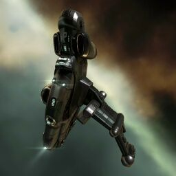

Imicus

Тип корабля: Фрегат
Государство/Организация: Gallente
Примерная стоимость: 558.000 ISK
Описание
«Имикус» — медленный, но хорошо бронированный фрегат. Это идеальный корабль для осуществления любых разведывательных операций. Используемый торговцами, бойцами и пилотами-боевиками, «Имикус» — это глаза и уши малых групп, пересекающих сектора с низким уровнем безопасности.
Характеристики
Корпус
Запас прочности корпуса: 275 ед.
Вместимость грузового отсека: 400 м^3
Объем отсека для дронов: 40 м^3
Пропускная способность канала телеуправления: 20 Мбит/с
Масса: 997.000 кг
Занимает объем: 21.500,0 м^3 (2.500,0 м^3 в разобранном виде)
Влияние инертности конструкции: 4,15x
Сопротивление корпуса ЭМ-урону: 33 %
Сопротивление корпуса термальному урону: 33 %
Сопротивление корпуса кинетическому урону: 33 %
Сопротивление корпуса фугасному урону: 33 %
Броня
Запас прочности брони: 325 ед.
Сопротивление брони ЭМ-урону: 50 %
Сопротивление брони термальному урону: 35 %
Сопротивление брони кинетическому урону: 35 %
Сопротивление брони фугасному урону: 10 %
Щит
Запас прочности щита: 275 ед.
Влияние на время регенерации щитов: 10 минут и 25 секунд
Сопротивление щита ЭМ-урону: 0 %
Сопротивление щита термальному урону: 20 %
Сопротивление щита кинетическому урону: 40 %
Сопротивление щита фугасному урону: 50 %
Сопротивление средствам РЭП
Сопротивление накопителя нейтрализирующему воздействию: 0 %
Сопротивление воздействию генератору стазис-поля: 0 %
Сопротивление воздействию помех на наводку вооружения: 0 %
Накопитель энергии
Емкость накопителя: 270,0 ГДж
Время востановления заряда: 150,5 с
Целеуказания
Максимальная дальность захвата цели: 35 км
Максимальное количество захваченных целей: 4
Радиус сигнатуры: 41 м
Разрешающая способность систем захвата цели: 450 мм
Эффективность радарной системы: -
Эффективность магнитнометрической системы: 11 ед.
Эффективность гравиметрической системы: -
Эффективность ладарной системы: -
Двигательная установка
Максимальная скорость: 330 м/с
Скорость в варп-режиме: 5,0 а.е./с.
Служба оснащения
Мощность ЦПУ: 250,0 Тф
Мощность реактора: 21 МВт
Калибровка: 400 ед.
Точки монтажа орудийных установок: 1
Точки монтажа пусковых установок: -
Разъемы большой мощности: 3
Разъемы средней мощности: 4
Разъемы малой мощности: 3
Разъемы под установку тюнинг-модулей: 3